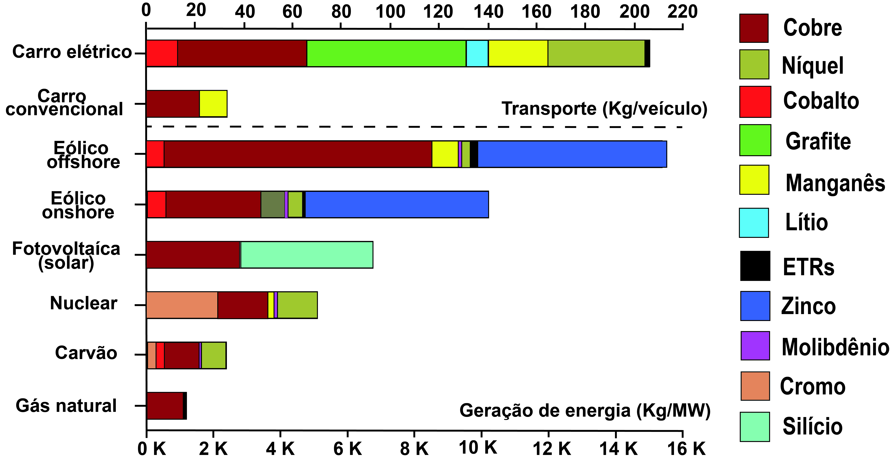

Metais, O Aspecto Crítico da Transição Energética

Resumo em Português
O capítulo “Metais, o Aspecto Crítico da Transição Energética” aborda a relação entre a transição energética e a crescente demanda por metais críticos necessários para tecnologias de baixo carbono. O texto argumenta que a eletrificação da economia, a expansão das energias renováveis e a produção de veículos elétricos dependem fortemente de minerais como lítio, cobalto, terras raras e outros metais estratégicos, cuja oferta mundial ainda é limitada e concentrada em poucos países.Os autores destacam que a demanda por esses recursos deve crescer significativamente, enquanto a descoberta de novos depósitos minerais se torna cada vez mais difícil e custosa. Nesse contexto, defendem o fortalecimento da exploração mineral, maior investimento em pesquisa geológica e redução de barreiras regulatórias para ampliar a oferta desses minerais. O capítulo também chama atenção para os riscos geopolíticos associados à concentração da produção e do processamento mineral, especialmente sob influência da China, além de ressaltar que a transição energética não ocorrerá de forma rápida ou simples. Para o Brasil, os autores defendem uma transição gradual, mantendo investimentos em petróleo, gás e mineração, ao mesmo tempo em que se desenvolvem fontes energéticas e tecnologias de menor emissão de carbono. A principal conclusão é que a transição energética depende diretamente da disponibilidade de metais críticos, tornando a mineração e o conhecimento geológico elementos estratégicos para o futuro energético mundial.